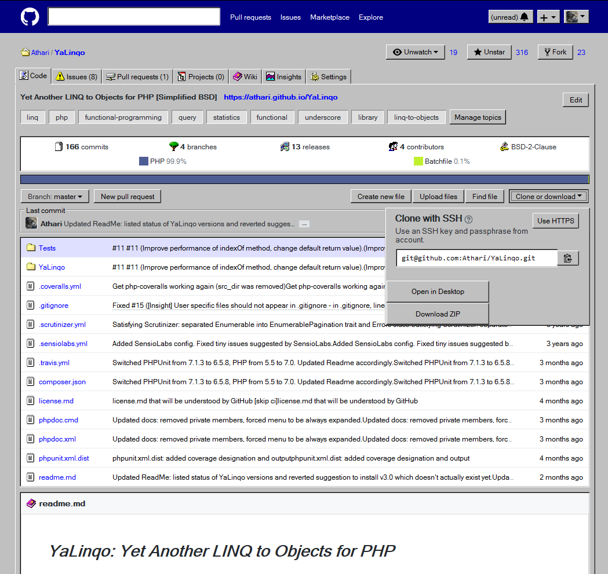
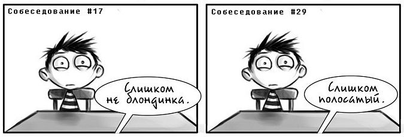

GitHub превращается превращается GitHub… в элегантный Windows 95
posted by
Milfgard
5 июля в 15:54
5
4
В Твиттере какое-то время назад запостили шутку в честь приобретения Майкрософтом ГитХаба — страницу сайта,
перестилизованную в стиле Windows 98. Я решил, что шутка слишком хороша, чтобы оставаться шуткой.

Антисобеседования
posted by
Milfgard
17 июля в 16:05
1
3
Я побывал на многих плохих собеседованиях, и в качестве кандидата и в качестве ведущего, и в качестве наблюдателя.
В результате сформулировался крайне субъективный набор заметок о том, как стоит и как не стоит проводить собеседование разработчиков.
Как я переехал в Израиль после блокировки Telegram
posted by
Milfgard
23 июня в 09:52
8
5
Все помнят бурление, когда вышло постановление о блокировке Telegram?
Как много было вопящих и брызгающих слюной комментов о том,
что поросенок Петр всегда был прав и вообще пора собирать чемодан и искать работу за рубежом?
Пара слов про дирижабли
posted by
Milfgard
28 июня в 09:52
8
5
За дирижаблями, возможно, снова будущее. Они как дроны, только могут быть огромными и висеть в воздухе неделями.
Я как-то обещал рассказать про советскую стратегическую концепцию о заправке дизельных подлодок с помощью дирижаблей.
Дирижабль должен был стать мобильной базой и сразу разведпунктом.